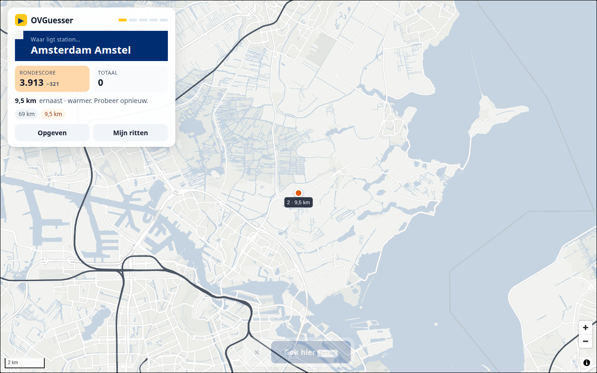
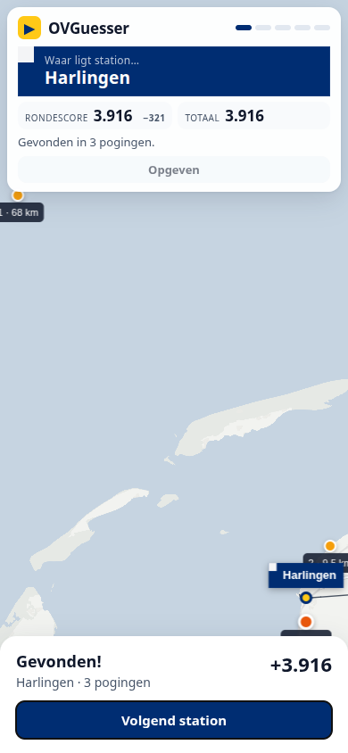
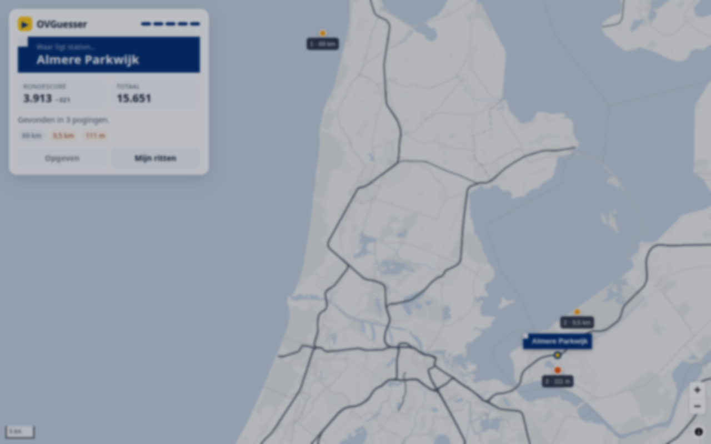
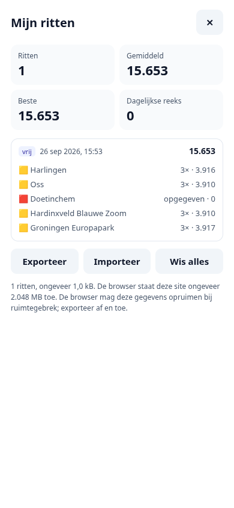

What went wrong in the Replit version, what I'd build instead, how runs get stored in the player's browser, and how it deploys to Railway. There's a working prototype in the middle of this page.
The old game was fun and the design ideas were good. It broke for reasons that come from its architecture: a server that kept game state for every player, a key-value store with a 5,000-key cap, and scoring code that lived in two places and disagreed. The rebuild moves the whole game into the browser, stores each player's runs in their own IndexedDB, and turns the server into a small static file host on Railway.
Plan in one list:
The history covers 24 May to 1 June 2025, with a last CSV snapshot in August. About two thirds of it is UI iteration; you steered the design closely, commit by commit. The last third is a fight with deployment: sessions, then Replit DB, then its key limit. Sixteen commit messages are about scoring alone. Here is what I'd call the root causes, with evidence.
| Problem | What happened | Evidence |
|---|---|---|
| critical Game sessions lived on the server and weren't tied to a player | getCurrentGameSession() returned the newest session of all players. Sessions first lived in process memory, so on Replit Autoscale a request that hit a different instance got "Session not found". This is the 404 on /api/session/1548/complete-game you saw when lots of people played at once. | 94adfbb prompt, server/storage.ts |
| critical Replit DB used as a relational database | One key per result, one per session, plus ID counters. The client's {ok, value} wrapper got misread, which produced keys like session_[object Object]11. list({prefix}) didn't work reliably, so every read listed all keys. Then the 5,000-key cap was hit, and a cleanup job had to delete old data. | 5b120cd…b896d60, attached_assets/Pasted--workspace-node-debug-db…, server/cleanup.ts |
| critical Scoring existed twice, with different rules | The client deducted 500 per extra attempt and the server deducted 300. The round total shown to the player came from the client. The CSV log and stored results came from the server. They never matched. | game.tsx:92 vs storage.ts calculateRoundScore |
| bug Round score could go up after a better guess | Only the latest guess's distance was deducted, not the sum. Guess 1 at 69 km gives 4,310. Guess 2 at 9.5 km gives 4,405. In b371a60 you asked for each attempt's distance to be deducted; the code never did that. The chart in Rules & scoring shows it. | b371a60, c3350c0 prompts |
| bug "Volgend station" fired twice | Ending a round started two independent requests. The CSV has Geleen Oost twice within 0.7 s and Bedum three times within 1.5 s. | d376b61, game_results.csv |
| bug Railway lines broke in production | The 2.8 MB GeoJSON existed in two places. When the file was missing, the server's catch-all returned index.html, and the browser failed on JSON.parse. | a485c7e prompt, screenshot afbeelding_1748197306563.png |
| bug Any server error crashed the process | The Express error handler sent a response and then rethrew the error. | server/index.ts:47 |
| The answer was sent before the guess | /api/stations/random returned the station's coordinates, so it was visible in devtools. The server round trip on every click added latency without preventing cheating. | routes.ts:59 |
| Every request loaded every station | getStationById read the full station array with all OSM tags from Replit DB, on every guess. | storage.ts:177 |
| Station list had odd entries | 405 OSM points, including 8 heritage stops that NS doesn't serve (Baarland, Nisse, Beekbergen, Pluimweide…), duplicate Apeldoorn and Dieren for the steam railway, and no Buitenpost. Baarland shows up as a question in one of your console screenshots. | attached_assets/export(2).geojson, afbeelding_1748119350220.png |
| Result log disappeared | The CSV log was written to the local disk of an autoscaling deployment. Every redeploy or new instance started over. 14 rows survive. | 7b5c462, server/logger.ts |
| Licence and accessibility | Map attribution was switched off; OSM and CARTO require it. maximum-scale=1 blocked pinch zoom. lang="en" on a Dutch page. The Replit dev banner script shipped to production. | game-map.tsx:145, client/index.html |
| Nothing survived a reload | All game state lived in about 15 useState hooks, sequenced with setTimeout. A refresh lost the run, and players had no history at all. | pages/game.tsx |
| Dependency weight | 65 runtime dependencies, including 27 Radix packages and 47 shadcn component files. Passport, express-session, recharts and a Drizzle Postgres schema were installed but never used. | package.json, shared/schema.ts |
Your own design decisions from the history carry over: the NS sign in #002d72 with the white square top left, dark grey railway lines at full opacity, a basemap without labels, the scale bar, distance labels on previous guesses, best of five, 5,000 points per station, reveal ends the round with 0 points and a "volgende ronde beter" message, sharing with a copied-to-clipboard toast, the score that flashes red and green (it never worked in Replit, 615ee0b to a08a128, and it works in the prototype), and the credit line.
The storage you ran out of wasn't in the browser. It was Replit Database on the server, which caps an app at 5,000 keys. The old design wrote a key for every finished round and every session, for every player, forever. At a few hundred players a day that cap arrives within days. The fix at the time was a job that deleted old results once 4,500 keys existed.
Every player's game state went to one shared server store. Writes grew with total players × rounds. Reads listed all keys. The limit was global, so one busy day could stop new sessions for everybody.
Each player's runs live in their own browser's IndexedDB. The server stores nothing per player. Storage grows only with how much one person plays: about 1 kB per run, so 10 runs a day for five years is roughly 18 MB. Browsers allow each site hundreds of megabytes or more. Headless Chromium on this VM reported 2,048 MB.
The browser does bring its own risks. Browsers may clear a site's data, Safari especially, and players switch devices. The Storing runs section covers how the rebuild deals with that.
idb, zod schemas, migrations, export and import.stations.json (7 kB gzipped), rails.json (200 kB gzipped).index.html.GET /healthz for Railway's health checkPOST /api/results to Railway Postgres| Part | Choice | Why |
|---|---|---|
| Language & build | TypeScript strict, Vite, React | You already know the shape of this from the old version. Strict mode catches the type mix-ups that caused [object Object] keys. |
| Game state | useReducer with explicit phases: start → guessing → roundEnd → runEnd | Actions that don't fit the current phase are ignored. That removes the double-click class of bugs and all the setTimeout sequencing. TanStack Query goes away because there is no server state. |
| Map | MapLibre GL JS instead of Leaflet | You noticed performance dropping once the railway layer was added (b277f5d). WebGL draws 15,000 line segments without trouble, pinch zoom is smooth on phones, and line width can depend on zoom and track type. It costs about 280 kB gzipped, loaded after the first paint. |
| Basemap | OpenFreeMap "positron" minus every symbol layer and its own railway layers | No place names to give the answer away, no station icons. Proper attribution stays on. CARTO's free basemap terms are for non-commercial use, and the old app hid its attribution. |
| Styling | Tailwind CSS plus about 8 hand-written components | Replaces 47 generated shadcn files. Dialogs use the native <dialog> element. |
| Local storage | IndexedDB through idb (about 1 kB), zod for validation | See Storing runs. localStorage is only for small settings. |
| Offline & install | vite-plugin-pwa | The app starts without a network after the first visit. Installed to the home screen, Safari also stops clearing its storage after 7 days. |
| Server | Hono on Node | Tiny, typed, and ready for API routes if the optional stats phase happens. |
| Tests & tooling | Vitest, fake-indexeddb, Playwright, Biome | Unit tests for rules and storage, end-to-end runs at desktop and phone sizes. The prototype on this page was verified by exactly that kind of script. |
I'd switch the station source from the Overpass export to the Rijden de Treinen station list (CC0, latest file September 2023). It uses the official NS station codes and a station type, from megastation down to stoptreinstation. That type gives us difficulty levels for free.
Stations may have opened or been renamed since September 2023, so the build script also reads an overrides.json for additions, renames and exclusions. Checking that list against the current NS map is part of phase 0. The build step turns the CSV into a 29 kB JSON file (7 kB gzipped). No database.
The two files you added to the root are the same 16,033 OSM ways. spoorlijnen.geojson is the tagged version of the old spoorlijnen2.geojson, with simplified geometry (36k points). export(3).geojson is the raw Overpass export at full resolution (169k points). The tags let us style and filter the lines:
Result: 2.0 MB raw, 200 kB gzipped, down from 2.8 MB with no compression configured. docs/plan/prep-data.py already does this; it becomes scripts/build-data.ts. I'd keep only spoorlijnen.geojson in git, gzipped (1 MB), and document the Overpass query instead of committing the 26 MB raw export.
The core loop stays: a station name, you click the map, you see how far off you were, you try again until you're within 500 m or give up. Five stations per run.
The score only ever goes down within a round, and every guess counts, which is what you described in a1969d1 and b371a60. The numbers are easy to tune: they are two constants in one tested function.
Round score after each guess
Example round: misses at 69 km, 9.5 km and 2 km, then a hit at 300 m. Edit the distances below.
Five random stations, never the same one twice in a run. Choose all 395 or intercity only.
The same five stations for everyone on a given day, derived from the Amsterdam date. No server needed. One attempt a day, a streak, and a Wordle-style share.
Region packs (Randstad, Limburg), heritage railways, or "Alle stations" as a long-run collection mode.
This is the main upgrade you asked for. The rules I'd hold the design to:
// IndexedDB "ovguesser", version 1
// store "runs": keyPath "id", indexes: startedAt, status, [mode, dateKey]
// store "meta": key/value for schema version, settings, lastExportAt
type Guess = [lat: number, lng: number, distanceM: number, msIntoRound: number];
interface Round {
code: string; // NS station code, e.g. "UT"
name: string; // name at the time, so history survives data updates
startedAt: number | null;
guesses: Guess[];
outcome: "found" | "revealed" | null;
}
interface Run {
id: string; // crypto.randomUUID()
v: 1; // record schema version, migrated on read
dataVersion: string; // which stations.json the run was played with
mode: "classic" | "daily";
pool: "all" | "major";
seed: number; // replays the same five stations
dateKey: string; // "2026-09-26", Europe/Amsterdam
status: "active" | "finished" | "abandoned";
current: number; // round index
rounds: Round[]; // always 5
startedAt: number;
finishedAt: number | null;
total?: number; // cached on finish; recomputable from rounds
}Guesses are stored as small arrays, not objects, to keep records compact. Scores are never stored per round. They're recomputed with the scoring function, so a formula change can't produce two versions of the truth again. The one exception is the cached total for fast lists.
Storage used after five years of play
At 1.0 kB per run, as measured in the prototype. Browsers typically give a site far more than 1 GB on a normal disk.
| Risk | Mitigation |
|---|---|
| Safari clears storage for sites not visited in 7 days | Home-screen web apps are exempt, so show an "add to home screen" tip on iOS after the second finished run. Offer export in the history drawer, and remind once if the last export is old and there are more than 20 runs. |
| Browser evicts data when the disk is nearly full | Call navigator.storage.persist() after the first finished run. The history drawer shows whether storage is persistent. |
| Private windows, blocked storage | Detect on start. Play continues in memory, with a banner saying runs won't be kept. |
| Quota exceeded | Catch QuotaExceededError, keep playing, show a toast with an export button. At 1 kB a run this is unlikely. |
| Corrupt or old records | zod validation on read. Invalid records are skipped and counted, never crash the list. Migrations run per record from v. |
| Two tabs | Each tab plays its own run. A BroadcastChannel refreshes the history list in other tabs. Starting a new run marks the old active run as abandoned. |
| New phone | Export and import in v1. A "sync code" backup to a server is possible later, if you add the optional database. |
A single-file prototype of the proposed game with real data, a real MapLibre map and real IndexedDB storage. Play a run, reload in the middle, open "Mijn ritten", export. It's there to judge feel and flow. The production code will be structured as described above.
Things to try: turn on "Direct gokken" to compare the two input styles · give up a round · play the daily ride twice and see it marked as played · press Enter to confirm and continue.
A Playwright script played full runs at 1280×800 and 390×844, gave up one round per run, reloaded mid-run to check resume, and read the share text back from IndexedDB. No page errors.




aria-live region. Colour never carries meaning alone. Pinch zoom stays enabled. prefers-reduced-motion turns off animations.lang="nl", all copy in one strings file so an English version is a translation job, not a refactor.| Layer | What gets tested or guarded |
|---|---|
| Game rules | Vitest: scoring edge cases (first-try hit, auto-reveal at 0, cap per miss), haversine against known distances, seeded picks never repeat within a run, daily seed is stable per date. |
| Round flow | Reducer tests: every action in every phase. Invalid actions are no-ops, which covers double clicks and late network callbacks. |
| Storage | fake-indexeddb: write and resume, migration from v0 fixtures, corrupt records skipped, quota errors simulated, export then import is a round trip. |
| End to end | Playwright at desktop and phone sizes: full run, give up, reload mid-run, share text, history. Runs in CI on every push, against the production build. |
| Data build | Fails the build if a station lacks coordinates, falls outside the Netherlands' bounding box, or has a duplicate name or code. |
| Runtime | React error boundary with a "restart run" button that keeps the stored run. Global error handler logs to the console. Sentry or similar can be added later if you want reports. |
| Budgets | Initial JavaScript under 350 kB gzipped including MapLibre. Game playable within 3 s on a mid-range phone on 4G. Checked with Lighthouse in CI. |
main branch with "Wait for CI" on, so a failing test blocks the deploy.Dockerfile: install, run the data build, Vite build, then copy dist/ and the server into a slim Node image.railway.json sets the health check path to /healthz and restart on failure. The server listens on $PORT instead of a hard-coded 5000.ovguesser.com (seen in your error log) and ovguesser.nl (in the share text). Switch DNS only after the Railway deployment passes on its generated domain, and keep the Replit deployment running until then.// railway.json
{
"$schema": "https://railway.com/railway.schema.json",
"build": { "builder": "DOCKERFILE" },
"deploy": {
"healthcheckPath": "/healthz",
"restartPolicyType": "ON_FAILURE",
"restartPolicyMaxRetries": 5
}
}If you want what the CSV log was trying to give you, add a Railway Postgres database and one endpoint that takes a finished run's summary: station codes, attempts, distances and score, no IP address. One row per round in one table. That gives you lines like "x% of players found Spaubeek on the first try", a hardest-stations list and a daily leaderboard. Postgres has no key cap, and a million rounds is roughly 100 MB. The game never waits on this endpoint; if it fails, the run is still saved locally. I'd only build it after v1 is live.
old_version/: Vite, TypeScript, Biome, Vitest, Playwright, GitHub Actions.scripts/build-data.ts with overrides.json. Move the raw GeoJSON to data/raw/.Done when CI is green on an empty app and the data build produces both files.
Done when the e2e test plays a full run at both sizes.
Done when storage tests cover the table above and a reload mid-round resumes in e2e.
Done when you've played it on your own phone and signed off on the feel.
railway.json, health check, PR environments, domain cutover.Done when ovguesser.com serves the new build and the old deployment is off.
/
├─ old_version/ untouched reference
├─ data/raw/ spoorlijnen.geojson.gz, stations-2023-09-nl.csv
├─ data/overrides.json added, renamed or excluded stations
├─ scripts/build-data.ts
├─ src/
│ ├─ game/ distance, scoring, rng, reducer (+ tests)
│ ├─ storage/ db, runs repository, schema, migrations, export
│ ├─ map/ GameMap, basemap filter, layers, markers
│ ├─ ui/ Hud, RoundCard, StartSheet, EndSheet, HistoryDrawer, Toast
│ └─ i18n/nl.ts
├─ server/index.ts Hono: static files, /healthz
├─ e2e/ Playwright specs
├─ docs/plan/ this page and the prototype
├─ Dockerfile, railway.json, .github/workflows/ci.ymlIs 250 + 7.5 per km per miss the right feel, and does the 500 m radius stay? Try a few rounds in the prototype first; the constants are easy to change.
Pin and confirm by default everywhere, or direct click on desktop and pin and confirm only on touch screens? I lean towards the second.
v1 has none. Do you want the optional global stats and daily leaderboard in phase 5, or keep OVGuesser fully local?
Is ovguesser.com or ovguesser.nl the main domain, where is DNS managed, and is the Replit deployment still live?
Dutch only, or Dutch with an English toggle from the start?
Only the 395 NS stations, or also heritage stops and border stations like Emmerich or Antwerpen as a bonus mode?
The old footer said "Gemaakt door Anne v/d Veen met Replit en Sonnet 4". What should it say now?